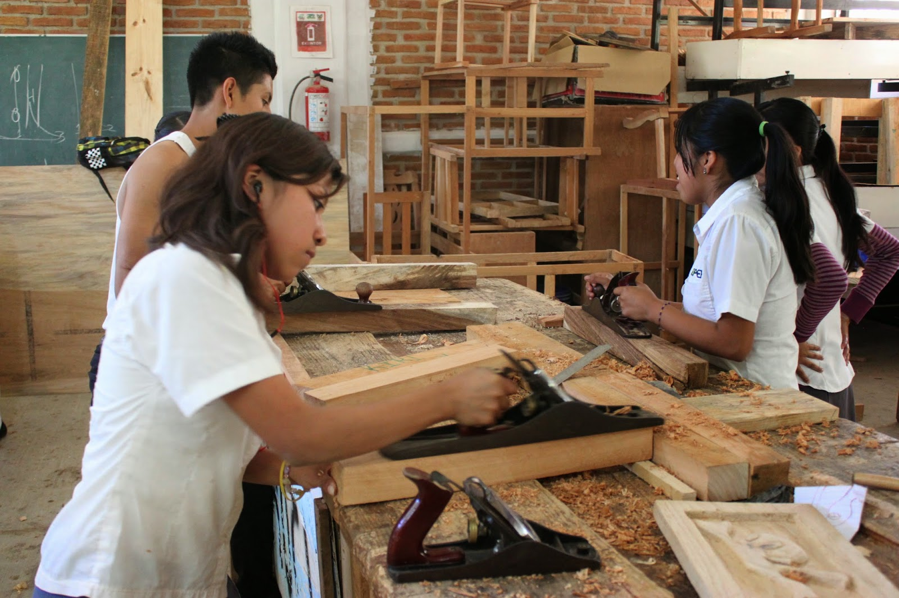
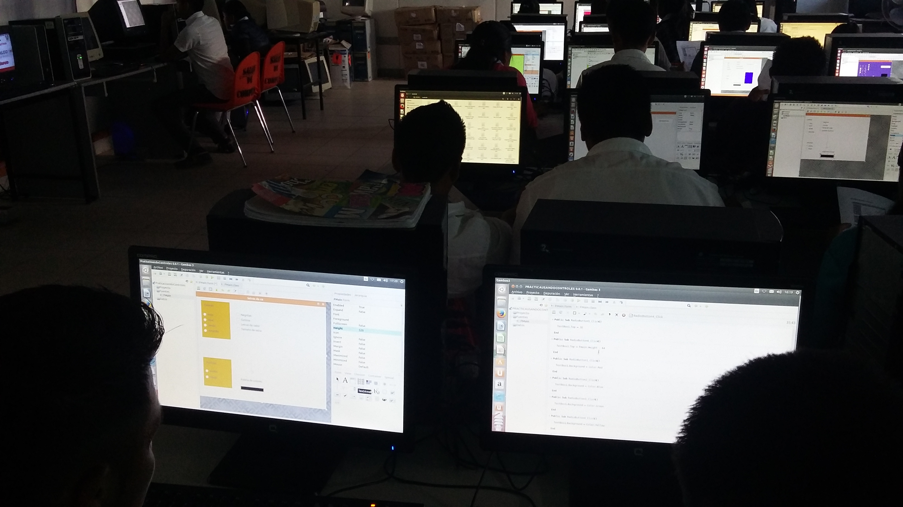

Campo Laboral
La capacitación de instalaciones hidráulicas, sanitarias, eléctricas y de gas basa
su grado de importancia en la necesidad social de buscar espacios dotados de
los servicios indispensables para la vida; tomando fuerza en la expansión de las
zonas urbanas y el aumento en la construcción de edificaciones que han permitido
el desarrollo de regiones. Por dichas razones la capacitación busca dotar de
conocimientos sobre estrategias novedosas, materiales y técnicas que permitan
dar solución a las necesidades sociales sobre calidad de vida urbanizada. Dentro
del campo laboral podrán insertarse en los siguientes giros: constructoras,
industrias o empresas, o si lo desean, auto emplearse.
Esta capacitación permite conocer y aplicar fundamentos de ciencias como la
física y química, así como los métodos y procedimientos de las matemáticas y el
cálculo a las diferentes instalaciones, para la resolución de problemas cotidianos
y la comprensión racional de su entorno. Tiene un enfoque práctico y pretende
generar estructuras de pensamiento encaminadas a la aplicación de procesos
que serán útiles a lo largo de la vida, sujetándose al rigor metodológico que
imponen las disciplinas que conforman el campo disciplinar.
Los conocimientos y destrezas adquiridas en la capacitación permitirán la elección
de formación académica superior en las siguiente licenciaturas o ingenierías:
Lic. Arquitectura
Ing. Electricidad y electrónica industrial
Ing. Eléctrica
Ing. Mecánico electricista
Ing. Civil

Campo Laboral
La capacitación de Tecnologías de la Información y la Comunicación se
conforma por el conjunto de conocimientos en ofimática, uso de comunidades
virtuales, diseño digital y desarrollo de software; lo cual, permite elaborar
proyectos informáticos de alto nivel para la solución de problemas en el entorno
del egresado.
Esta capacitación se enfoca a la integración, implementación y operación de
soluciones informáticas, empleando herramientas tecnológicas, así como la
administración de elementos de comunicación que permiten integrarse al campo
laboral o continuar con una formación universitaria en las siguientes áreas:
Análisis de información.
Desarrollo de sistemas y aplicaciones.
Estratega digital.
Administrador de base de datos.
Ciencias de la educación
